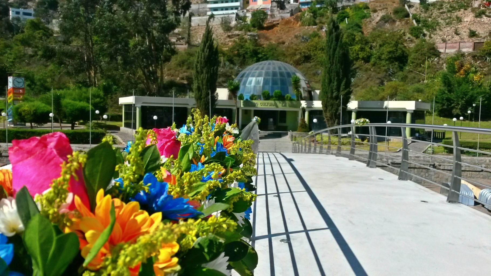
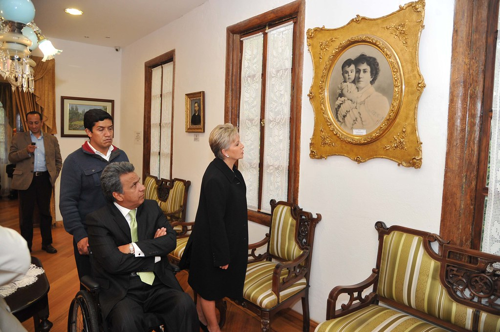
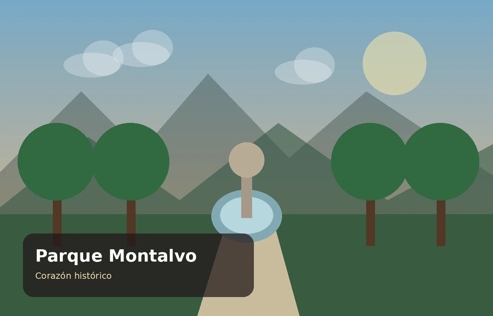
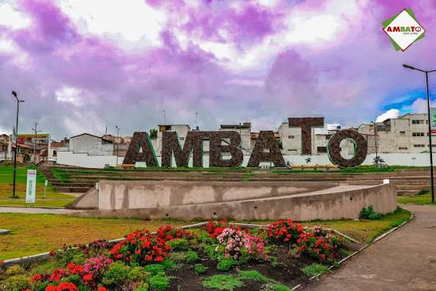

Naturaleza + cultura
Atocha-La Liria
Jardín histórico con vegetación, senderos y patrimonio relacionado con familias y personajes ambateños.
Vive Ambato reúne cultura, jardines, museos, parques, sabores tradicionales y celebraciones para mostrar una ciudad llena de identidad.
Estos espacios permiten conocer algunos de los principales rasgos culturales y recreativos de la ciudad.

Jardín histórico con vegetación, senderos y patrimonio relacionado con familias y personajes ambateños.

Un recorrido por la memoria del escritor ambateño y autor de la letra del Himno Nacional del Ecuador.

Espacio emblemático del centro de Ambato, rodeado de arquitectura, historia y vida urbana.

Ambato es conocida por la Fiesta de la Fruta y de las Flores, una celebración que reúne desfiles, arte, cultura y tradición.
Elige una actividad y arma una experiencia turística según tus intereses.